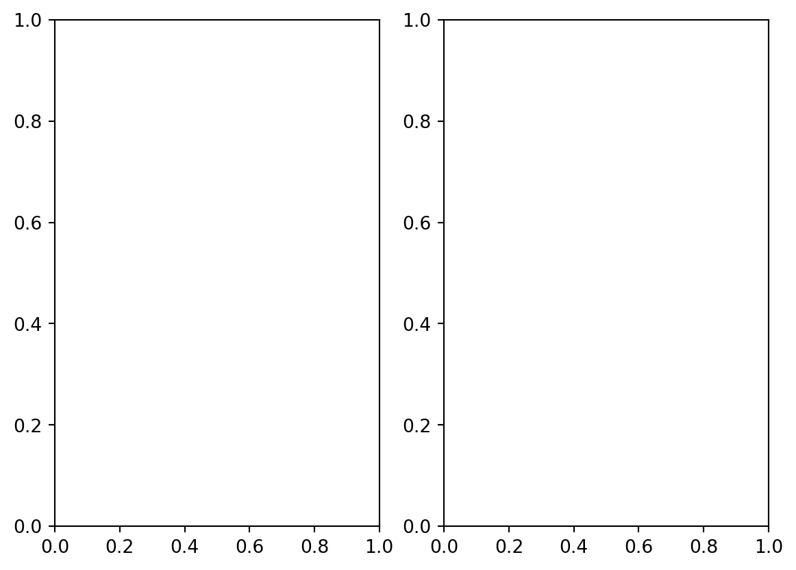

from distributed import LocalCluster
from pystac_client import Client
import numpy as np
import xarray as xr
import time
import matplotlib.pyplot as plt
from pyproj import Transformer
import cartopy.crs as ccrs
import cartopy.feature as cfeature
from skimage import exposure
from matplotlib.colors import BoundaryNorm, ListedColormap
from shapely.geometry import box Fire in Sardinia 2025 - Part 2
Introduction
On June 10th, 2025, a significant wildfire in Italy’s Nuoro Province in Sardinia burned approximately 1000 hectares, a scale that is clearly visible in satellite imagery with a 20-meter resolution. The European Forest Fire Information System (EFFIS) keeps record of these events.
This notebook demonstrates how two different .zarr encoded Sentinel Mission products can be combined to provide a compelling and informative overview of an active fire event.
First, we will use reflectance data from Sentinel-2 L2A to locate the area of the fire on the ground. At the same time, we will use data from Sentinel-3 SLSTR Land Surface Temperature (LST) to demonstrate the intense heat emanating from the fire.
By combining these two datasets, we will not only be able to see the fire location and its state on the day of the event, but also understand its thermal intensity, providing a more complete perspective on its dynamics.
This notebook is the second a series of three notebook:
- Part 1 - Compare Sentinel-2 True- and False-Color composites before and after a fire event
- Part 2 - Analyse fire intensity with Sentinel-2 and -3 data
- Part 3 - Assess burn severity with the normalised burn ratio (dNBR)
What we will learn
- ✂️ Extract and clip data from Sentinel-3 SLSTR L2
- 🛰️ Visualise potential fires based on the relationship between Sentinel-2 and Sentinel-3 available items through the EOPF STAC Catalog
- 🔭 Demostrate the smooth multi-mission integration capabilities
.zarrformat offers to the community
Import libraries
Helper functions
This notebook makes use of a set of functions that are all listed inside the zarr_wf_utils.py script. Inside the script, we will find costumised functions that allow us to mask, normalise and extract specific areas of our items of interest.
# Import our utility functions
from zarr_wf_utils import (
validate_scl,
mask_sub_utm,
normalisation_str_gm,
mask_sub_latlon,
lat_lon_to_utm_box,
zarr_mask_latlon
)Setting up the environment
Initiate a Dask cluster
The first step is to initiate a virtual Dask cluster. This cluster consists of a scheduler (the “brain”) and several workers (the “hands”), which enables faster processing of large datasets by breaking down tasks and running them in parallel.
A client is then created to manage communication between the code and this cluster. For more information, feel free to visit the dask documentation and the tutorial How to use dask.
# we are interested in the performance the code will have
st = time.time()
cluster = LocalCluster()
client = cluster.get_client()
clientClient
Client-96d771cc-eae6-11f0-8ff4-aaf5311b8903
| Connection method: Cluster object | Cluster type: distributed.LocalCluster |
| Dashboard: http://127.0.0.1:8787/status |
Cluster Info
LocalCluster
a4b02ae3
| Dashboard: http://127.0.0.1:8787/status | Workers: 4 |
| Total threads: 8 | Total memory: 31.35 GiB |
| Status: running | Using processes: True |
Scheduler Info
Scheduler
Scheduler-eff7bbd0-12c7-4a5c-8a7d-cde09d4db851
| Comm: tcp://127.0.0.1:39023 | Workers: 0 |
| Dashboard: http://127.0.0.1:8787/status | Total threads: 0 |
| Started: Just now | Total memory: 0 B |
Workers
Worker: 0
| Comm: tcp://127.0.0.1:38869 | Total threads: 2 |
| Dashboard: http://127.0.0.1:35197/status | Memory: 7.84 GiB |
| Nanny: tcp://127.0.0.1:39195 | |
| Local directory: /tmp/dask-scratch-space/worker-b11gpfc1 | |
Worker: 1
| Comm: tcp://127.0.0.1:36039 | Total threads: 2 |
| Dashboard: http://127.0.0.1:45879/status | Memory: 7.84 GiB |
| Nanny: tcp://127.0.0.1:40115 | |
| Local directory: /tmp/dask-scratch-space/worker-amcsn119 | |
Worker: 2
| Comm: tcp://127.0.0.1:34333 | Total threads: 2 |
| Dashboard: http://127.0.0.1:38629/status | Memory: 7.84 GiB |
| Nanny: tcp://127.0.0.1:35273 | |
| Local directory: /tmp/dask-scratch-space/worker-lkm5b_h8 | |
Worker: 3
| Comm: tcp://127.0.0.1:45613 | Total threads: 2 |
| Dashboard: http://127.0.0.1:46879/status | Memory: 7.84 GiB |
| Nanny: tcp://127.0.0.1:34483 | |
| Local directory: /tmp/dask-scratch-space/worker-ii_8bpxu | |
Establish a connection to the EOPF STAC Catalog
Data is retrieved from the EOPF STAC Catalogue endpoint. Once the connection is established, we can query the catalog based on specific search criteria.
eopf_stac_api_root_endpoint = "https://stac.core.eopf.eodc.eu/" #root starting point
eopf_catalog = Client.open(url=eopf_stac_api_root_endpoint) # calls the selected url
eopf_catalog
<Client id=eopf-sample-service-stac-api>
Define search paramters
# The timeframe and area of interest for our filtering
fire_d = '2025-06-11'
fire_d_s3 = '2025-06-10'
def_collection = ''
search_bbox = (8.847198,40.193395,8.938865,40.241895)
# Definition of the transformer parameters for reprojection and correct overlay of layers
transformer = Transformer.from_crs("EPSG:4326", "EPSG:32632", always_xy=True)
t_utm_to_deg = Transformer.from_crs("EPSG:32632","EPSG:4326", always_xy=True)
# Defining a larger bounding box for better visualisation:
bbox_vis = (8.649555,40.073583,9.127893,40.343840)
# A fixed geographic bounding box to highlight the AOI in the map format
map_box = search_bbox
# A new list with the converted UTM coordinates
bbox_utm = lat_lon_to_utm_box((bbox_vis[0], bbox_vis[1]),(bbox_vis[2], bbox_vis[3]), transformer)
# # Convert the coordinates of the map_box
# map_box = lat_lon_to_utm_box((map_box[0], map_box[1]),(map_box[2], map_box[3]))Overview of processing steps
In the following, we will go through three main processing steps:
- Step 1: Retrieving and visualising Land Surface Temperature from Sentinel-3 SLSTR L2 data
- Step 2: Creating a True-Color composite of Sentinel-2 L2A data, and
- Step 3: Overlaying both datasets, the True-Color composite with the Land Surface Temperature information
Retrieve Land Surface Temperature (LST) from Sentinel-3 SLSTR L2
Land Surface Temperature (LST) data, can be retrieved from the Sentinel-3 SLSTR L2 collection. This data helps to identify temperature anomalies over the Earth’s Surface, which can be a strong indicator of an active fire.
In the following, we query the EOPF STAC Catalog to retrieve Land Surface Temperature from Sentinel-3 SLSTR L2 data.
The search below introduces a new argument to the search: query. This argument allows us to go into the .zarr attributes metadata and filter based on specific parameters of the items we are interested in. We will filter for “Non-Time Critical” items.
# Specifying the Sentinel-3 SLSTR L2 LST collection name
def_collection = 'sentinel-3-slstr-l2-lst'
# Search the catalog for items matching the criteria:
s3_l2 = list(eopf_catalog.search(
bbox= search_bbox, # A bounding box input to define the area of interest
datetime= fire_d_s3, # A datetime string input to specify the time range
collections=def_collection, # The collection name to search within
query = {"product:timeliness_category": {'eq':'NT'}} # A query to filter by timeliness category
# in the Catalog
).item_collection())
# Extract the URLs for the product assets from the search results
av_urls = [item.assets["product"].href for item in s3_l2]
print("Search Results:")
print('Total Items Found for Sentinel-3 SLSRT over Sardinia: ',len(av_urls))Search Results:
Total Items Found for Sentinel-3 SLSRT over Sardinia: 5After filtering the catalog, we open the first available Sentinel-3 SLSTR item, which corresponds to our specific timeframe of the selected day.
For optimising the subsequent plotting, we can extract key information from the retrieved item, such as the date and the specific item time. Afterwards, we access the Land Surface Temperature (LST) asset. The LST data is available under the group measurements.
# Open the last item from the list of URLs as a Zarr data tree
lst_zarr = xr.open_datatree(
av_urls[-1], # Input: URL of the last Zarr item in the av_urls list
engine="zarr" # Specify the Zarr engine for opening the file
)
# Extract the start date and time from the data tree's metadata
date_zarr_lst = lst_zarr.attrs['stac_discovery']['properties']['start_datetime'][:10]
time_zarr_lst = lst_zarr.attrs['stac_discovery']['properties']['start_datetime'][11:19]
# Access the 'measurements' group within the data tree
meas_lst = lst_zarr.measurements
# The output is the measurements data group
meas_lst--------------------------------------------------------------------------- GroupNotFoundError Traceback (most recent call last) File /opt/conda/lib/python3.12/site-packages/xarray/backends/zarr.py:1868, in _get_open_params(store, mode, synchronizer, group, consolidated, consolidate_on_close, chunk_store, storage_options, zarr_version, use_zarr_fill_value_as_mask, zarr_format) 1867 try: -> 1868 zarr_root_group = zarr.open_consolidated(store, **open_kwargs) 1869 except (ValueError, KeyError): 1870 # ValueError in zarr-python 3.x, KeyError in 2.x. File /opt/conda/lib/python3.12/site-packages/zarr/api/synchronous.py:238, in open_consolidated(use_consolidated, *args, **kwargs) 234 """ 235 Alias for [`open_group`][zarr.api.synchronous.open_group] with ``use_consolidated=True``. 236 """ 237 return Group( --> 238 sync(async_api.open_consolidated(*args, use_consolidated=use_consolidated, **kwargs)) 239 ) File /opt/conda/lib/python3.12/site-packages/zarr/core/sync.py:159, in sync(coro, loop, timeout) 158 if isinstance(return_result, BaseException): --> 159 raise return_result 160 else: File /opt/conda/lib/python3.12/site-packages/zarr/core/sync.py:119, in _runner(coro) 118 try: --> 119 return await coro 120 except Exception as ex: File /opt/conda/lib/python3.12/site-packages/zarr/api/asynchronous.py:415, in open_consolidated(use_consolidated, *args, **kwargs) 411 raise TypeError( 412 "'use_consolidated' must be 'True' in 'open_consolidated'. Use 'open' with " 413 "'use_consolidated=False' to bypass consolidated metadata." 414 ) --> 415 return await open_group(*args, use_consolidated=use_consolidated, **kwargs) File /opt/conda/lib/python3.12/site-packages/zarr/api/asynchronous.py:881, in open_group(store, mode, cache_attrs, synchronizer, path, chunk_store, storage_options, zarr_version, zarr_format, meta_array, attributes, use_consolidated) 880 msg = f"No group found in store {store!r} at path {store_path.path!r}" --> 881 raise GroupNotFoundError(msg) GroupNotFoundError: No group found in store 'https://objects.eodc.eu:443/e05ab01a9d56408d82ac32d69a5aae2a:202506-s03slslst/10/products/cpm_v256/S3B_SL_2_LST____20250610T091849_20250610T092149_20250611T160034_0179_107_264_2340_ESA_O_NT_004.zarr' at path '' During handling of the above exception, another exception occurred: GroupNotFoundError Traceback (most recent call last) Cell In[7], line 2 1 # Open the last item from the list of URLs as a Zarr data tree ----> 2 lst_zarr = xr.open_datatree( 3 av_urls[-1], # Input: URL of the last Zarr item in the av_urls list 4 engine="zarr" # Specify the Zarr engine for opening the file 5 ) 7 # Extract the start date and time from the data tree's metadata 8 date_zarr_lst = lst_zarr.attrs['stac_discovery']['properties']['start_datetime'][:10] File /opt/conda/lib/python3.12/site-packages/xarray/backends/api.py:1076, in open_datatree(filename_or_obj, engine, chunks, cache, decode_cf, mask_and_scale, decode_times, decode_timedelta, use_cftime, concat_characters, decode_coords, drop_variables, create_default_indexes, inline_array, chunked_array_type, from_array_kwargs, backend_kwargs, **kwargs) 1064 decoders = _resolve_decoders_kwargs( 1065 decode_cf, 1066 open_backend_dataset_parameters=backend.open_dataset_parameters, (...) 1072 decode_coords=decode_coords, 1073 ) 1074 overwrite_encoded_chunks = kwargs.pop("overwrite_encoded_chunks", None) -> 1076 backend_tree = backend.open_datatree( 1077 filename_or_obj, 1078 drop_variables=drop_variables, 1079 **decoders, 1080 **kwargs, 1081 ) 1083 tree = _datatree_from_backend_datatree( 1084 backend_tree, 1085 filename_or_obj, (...) 1096 **kwargs, 1097 ) 1099 return tree File /opt/conda/lib/python3.12/site-packages/xarray/backends/zarr.py:1710, in ZarrBackendEntrypoint.open_datatree(self, filename_or_obj, mask_and_scale, decode_times, concat_characters, decode_coords, drop_variables, use_cftime, decode_timedelta, group, mode, synchronizer, consolidated, chunk_store, storage_options, zarr_version, zarr_format) 1689 def open_datatree( 1690 self, 1691 filename_or_obj: T_PathFileOrDataStore, (...) 1707 zarr_format=None, 1708 ) -> DataTree: 1709 filename_or_obj = _normalize_path(filename_or_obj) -> 1710 groups_dict = self.open_groups_as_dict( 1711 filename_or_obj=filename_or_obj, 1712 mask_and_scale=mask_and_scale, 1713 decode_times=decode_times, 1714 concat_characters=concat_characters, 1715 decode_coords=decode_coords, 1716 drop_variables=drop_variables, 1717 use_cftime=use_cftime, 1718 decode_timedelta=decode_timedelta, 1719 group=group, 1720 mode=mode, 1721 synchronizer=synchronizer, 1722 consolidated=consolidated, 1723 chunk_store=chunk_store, 1724 storage_options=storage_options, 1725 zarr_version=zarr_version, 1726 zarr_format=zarr_format, 1727 ) 1729 return datatree_from_dict_with_io_cleanup(groups_dict) File /opt/conda/lib/python3.12/site-packages/xarray/backends/zarr.py:1759, in ZarrBackendEntrypoint.open_groups_as_dict(self, filename_or_obj, mask_and_scale, decode_times, concat_characters, decode_coords, drop_variables, use_cftime, decode_timedelta, group, mode, synchronizer, consolidated, chunk_store, storage_options, zarr_version, zarr_format) 1756 else: 1757 parent = str(NodePath("/")) -> 1759 stores = ZarrStore.open_store( 1760 filename_or_obj, 1761 group=parent, 1762 mode=mode, 1763 synchronizer=synchronizer, 1764 consolidated=consolidated, 1765 consolidate_on_close=False, 1766 chunk_store=chunk_store, 1767 storage_options=storage_options, 1768 zarr_version=zarr_version, 1769 zarr_format=zarr_format, 1770 ) 1772 groups_dict = {} 1773 for path_group, store in stores.items(): File /opt/conda/lib/python3.12/site-packages/xarray/backends/zarr.py:645, in ZarrStore.open_store(cls, store, mode, synchronizer, group, consolidated, consolidate_on_close, chunk_store, storage_options, append_dim, write_region, safe_chunks, align_chunks, zarr_version, zarr_format, use_zarr_fill_value_as_mask, write_empty, cache_members) 619 @classmethod 620 def open_store( 621 cls, (...) 638 cache_members: bool = True, 639 ): 640 ( 641 zarr_group, 642 consolidate_on_close, 643 close_store_on_close, 644 use_zarr_fill_value_as_mask, --> 645 ) = _get_open_params( 646 store=store, 647 mode=mode, 648 synchronizer=synchronizer, 649 group=group, 650 consolidated=consolidated, 651 consolidate_on_close=consolidate_on_close, 652 chunk_store=chunk_store, 653 storage_options=storage_options, 654 zarr_version=zarr_version, 655 use_zarr_fill_value_as_mask=use_zarr_fill_value_as_mask, 656 zarr_format=zarr_format, 657 ) 659 from zarr import Group 661 group_members: dict[str, Group] = {} File /opt/conda/lib/python3.12/site-packages/xarray/backends/zarr.py:1872, in _get_open_params(store, mode, synchronizer, group, consolidated, consolidate_on_close, chunk_store, storage_options, zarr_version, use_zarr_fill_value_as_mask, zarr_format) 1869 except (ValueError, KeyError): 1870 # ValueError in zarr-python 3.x, KeyError in 2.x. 1871 try: -> 1872 zarr_root_group = zarr.open_group(store, **open_kwargs) 1873 emit_user_level_warning( 1874 "Failed to open Zarr store with consolidated metadata, " 1875 "but successfully read with non-consolidated metadata. " (...) 1885 RuntimeWarning, 1886 ) 1887 except missing_exc as err: File /opt/conda/lib/python3.12/site-packages/zarr/api/synchronous.py:549, in open_group(store, mode, cache_attrs, synchronizer, path, chunk_store, storage_options, zarr_version, zarr_format, meta_array, attributes, use_consolidated) 478 def open_group( 479 store: StoreLike | None = None, 480 *, (...) 491 use_consolidated: bool | str | None = None, 492 ) -> Group: 493 """Open a group using file-mode-like semantics. 494 495 Parameters (...) 546 The new group. 547 """ 548 return Group( --> 549 sync( 550 async_api.open_group( 551 store=store, 552 mode=mode, 553 cache_attrs=cache_attrs, 554 synchronizer=synchronizer, 555 path=path, 556 chunk_store=chunk_store, 557 storage_options=storage_options, 558 zarr_version=zarr_version, 559 zarr_format=zarr_format, 560 meta_array=meta_array, 561 attributes=attributes, 562 use_consolidated=use_consolidated, 563 ) 564 ) 565 ) File /opt/conda/lib/python3.12/site-packages/zarr/core/sync.py:159, in sync(coro, loop, timeout) 156 return_result = next(iter(finished)).result() 158 if isinstance(return_result, BaseException): --> 159 raise return_result 160 else: 161 return return_result File /opt/conda/lib/python3.12/site-packages/zarr/core/sync.py:119, in _runner(coro) 114 """ 115 Await a coroutine and return the result of running it. If awaiting the coroutine raises an 116 exception, the exception will be returned. 117 """ 118 try: --> 119 return await coro 120 except Exception as ex: 121 return ex File /opt/conda/lib/python3.12/site-packages/zarr/api/asynchronous.py:881, in open_group(store, mode, cache_attrs, synchronizer, path, chunk_store, storage_options, zarr_version, zarr_format, meta_array, attributes, use_consolidated) 874 return await AsyncGroup.from_store( 875 store_path, 876 zarr_format=_zarr_format, 877 overwrite=overwrite, 878 attributes=attributes, 879 ) 880 msg = f"No group found in store {store!r} at path {store_path.path!r}" --> 881 raise GroupNotFoundError(msg) GroupNotFoundError: No group found in store 'https://objects.eodc.eu:443/e05ab01a9d56408d82ac32d69a5aae2a:202506-s03slslst/10/products/cpm_v256/S3B_SL_2_LST____20250610T091849_20250610T092149_20250611T160034_0179_107_264_2340_ESA_O_NT_004.zarr' at path ''
To effectively overlay the data, we first need to process the Land Surface Temperature (LST) asset to cover the same area of interest. We can accomplish this by applying our pre-defined masking functions. Since the LST data is presented in EPSG:4326, we will use the zarr_mask_latlon() function to generate the boolean mask of interest over the data, followed by the mask_sub_latlon() function, which clips it to our area of interest.
# The zarr_mask_latlon function is used to create a mask based on a bounding box and the measurements data
cols_lst , rows_lst = zarr_mask_latlon(
bbox_vis, # The input bounding box
meas_lst # The measurements group from the zarr data tree
)
# The mask_sub_latlon function then clips the land surface temperature data
lst_clip = mask_sub_latlon(
meas_lst.lst, # The land surface temperature band from the measurements group
rows_lst, # The row indices for the mask
cols_lst # The column indices for the mask
).values
# The latitude data is clipped using the same mask indices
lat_lst = mask_sub_latlon(meas_lst['latitude'],rows_lst, cols_lst).values
# The longitude data is clipped using the same mask indices
lon_lst = mask_sub_latlon(meas_lst['longitude'],rows_lst, cols_lst).values--------------------------------------------------------------------------- NameError Traceback (most recent call last) Cell In[8], line 4 1 # The zarr_mask_latlon function is used to create a mask based on a bounding box and the measurements data 2 cols_lst , rows_lst = zarr_mask_latlon( 3 bbox_vis, # The input bounding box ----> 4 meas_lst # The measurements group from the zarr data tree 5 ) 6 # The mask_sub_latlon function then clips the land surface temperature data 7 lst_clip = mask_sub_latlon( 8 meas_lst.lst, # The land surface temperature band from the measurements group 9 rows_lst, # The row indices for the mask 10 cols_lst # The column indices for the mask 11 ).values NameError: name 'meas_lst' is not defined
After clipping the data to our defined area of interest, we apply the temperature threshold to the data, filtering for only those pixels with temperatures above 312 Kelvin. This temperature range is a strong indicator of heat anomalies, which are often associated with active or developing fires.
# To clip the data and prepare the array for an overlay with the TCI:
lstf_clip = np.where(
lst_clip <= 312, # values less than or equal to 312 K
np.nan, # The value to assign if the condition is true
lst_clip # The value to assign if the condition is false
)--------------------------------------------------------------------------- NameError Traceback (most recent call last) Cell In[9], line 3 1 # To clip the data and prepare the array for an overlay with the TCI: 2 lstf_clip = np.where( ----> 3 lst_clip <= 312, # values less than or equal to 312 K 4 np.nan, # The value to assign if the condition is true 5 lst_clip # The value to assign if the condition is false 6 ) NameError: name 'lst_clip' is not defined
Creating a custom colour map that uses shades of red, with the most vibrant red indicating the hottest areas will enhance our visualisation. This colour map is applied to the LST data, allowing us to clearly and intuitively see the heat signatures that correspond with potential fire activity when the two layers are overlayed.
# For colour ramp:
col_map = ListedColormap([[1., 140./255., 0],[178./255., 34./255., 34./255.],[1, 0, 0]]) # red composite shades
# Define the boundaries for each colour in the ramp
bounds = [300, 305, 310, 315]
# Calculate the number of colours, which is one less than the number of bounds
ncolors = len(bounds) - 1
# Create a normalisation object to map data values to colours based on the defined bounds
norm = BoundaryNorm(bounds, col_map.N)
# Use the box() function to create a polygon from the coordinates
map_box = box(map_box[0],map_box[1],map_box[2],map_box[3])The final step of the Sentinel-3 SLSTR data processing is to visualise the temperature anomalies. We will prepare the filtered LST data to be overlaid over the True-Color composite of Sentinel-2 L2 data.
# Create a figure to plot
fig, axs = plt.subplots(1, 2)
axs[0].imshow(lst_clip)
axs[0].set_title('Clipped LST')
# Plot the filtered land surface temperature data on the second subplot
axs[1].imshow(lstf_clip)
axs[1].set_title('Filtered LST') # Add a title for clarity
# Adjust the layout
fig.tight_layout()
# Display the plot
plt.show()--------------------------------------------------------------------------- NameError Traceback (most recent call last) Cell In[11], line 3 1 # Create a figure to plot 2 fig, axs = plt.subplots(1, 2) ----> 3 axs[0].imshow(lst_clip) 4 axs[0].set_title('Clipped LST') 5 # Plot the filtered land surface temperature data on the second subplot NameError: name 'lst_clip' is not defined

Create Sentinel-2 L2A True-Color composite
Following the parameters we defined before and the workflow described in the first part of this notebook series, we will filter the Sentinel-2 L2A data collection to match our event and AOI. This ensures that the visualisations we create are directly relevant to the fire event and set the stage for comparing it with the Land Surface Temperature data from Sentinel-3.
# Interest timeframe parameters for the filtering
date_p = fire_d_s3 + 'T00:00:00Z/' + fire_d_s3 + 'T23:59:59.999999Z' # interest period
def_collection = 'sentinel-2-l2a' # collection
s2_col = list(eopf_catalog.search(
bbox= search_bbox, # area
datetime= date_p, #time frame
collections=def_collection # collection
).item_collection())
av_urls = [item.assets["product"].href for item in s2_col]
print(av_urls)[]As we can see, there is no capture available for the day on which the fire occurred. This is because Sentinel-2 L2A has a revisit time of five days at the equator, making it possible that, even when the constellation is synchronously retrieving data, the day in question may not be available.
In this case, we define the capture date as the one closest to the event, the 11th June 2025.
# Interest timeframe parameters for the filtering
date_p = fire_d + 'T00:00:00Z/' + fire_d + 'T23:59:59.999999Z' # interest period
def_collection = 'sentinel-2-l2a' # collection
s2_col = list(eopf_catalog.search(
bbox= search_bbox, # area
datetime= date_p, #time frame
collections=def_collection # collection
).item_collection())
av_urls = [item.assets["product"].href for item in s2_col]
av_urls['https://objects.eodc.eu:443/e05ab01a9d56408d82ac32d69a5aae2a:202506-s02msil2a/11/products/cpm_v256/S2C_MSIL2A_20250611T101041_N0511_R022_T32TMK_20250611T175918.zarr']Once we have obtained the available items from the Sentinel-2 L2A collection, we can open the asset as a xarray.DataTree.
To prepare the data for further processing, we will extract key metadata like the collection, date, time, and the spectral bands needed for the visualisation (which are conveniently grouped under r20m group).
These True-Color composite processing steps include: - Masking of invalid pixels - Clipping to AOI - Band selection - Normalisation - Composite creation - Equalisation
Masking out invalid pixels
# We are interested in the datasets contained in the measurements bands for True Colour and False Colour Composites.
s2_zarr = xr.open_datatree(
av_urls[0], engine="zarr", #we always get the earliest one (the first available item goes last)
chunks={},
decode_timedelta=False
)
# Store interest parameters for further plotting:
date = s2_zarr.attrs['stac_discovery']['properties']['start_datetime'][:10]
time_zarr = s2_zarr.attrs['stac_discovery']['properties']['start_datetime'][11:19]
target_crs = s2_zarr.attrs["stac_discovery"]["properties"]["proj:epsg"]
# Extract the resolution group we are interested to analyse over:
zarr_meas = s2_zarr.measurements.reflectance.r20m
# Extract the cloud free mask at 20m resolution:
l2a_class_20m = s2_zarr.conditions.mask.l2a_classification.r20m.scl
valid_mask = validate_scl(l2a_class_20m) # Boolean mask (10980x10980)--------------------------------------------------------------------------- GroupNotFoundError Traceback (most recent call last) File /opt/conda/lib/python3.12/site-packages/xarray/backends/zarr.py:1868, in _get_open_params(store, mode, synchronizer, group, consolidated, consolidate_on_close, chunk_store, storage_options, zarr_version, use_zarr_fill_value_as_mask, zarr_format) 1867 try: -> 1868 zarr_root_group = zarr.open_consolidated(store, **open_kwargs) 1869 except (ValueError, KeyError): 1870 # ValueError in zarr-python 3.x, KeyError in 2.x. File /opt/conda/lib/python3.12/site-packages/zarr/api/synchronous.py:238, in open_consolidated(use_consolidated, *args, **kwargs) 234 """ 235 Alias for [`open_group`][zarr.api.synchronous.open_group] with ``use_consolidated=True``. 236 """ 237 return Group( --> 238 sync(async_api.open_consolidated(*args, use_consolidated=use_consolidated, **kwargs)) 239 ) File /opt/conda/lib/python3.12/site-packages/zarr/core/sync.py:159, in sync(coro, loop, timeout) 158 if isinstance(return_result, BaseException): --> 159 raise return_result 160 else: File /opt/conda/lib/python3.12/site-packages/zarr/core/sync.py:119, in _runner(coro) 118 try: --> 119 return await coro 120 except Exception as ex: File /opt/conda/lib/python3.12/site-packages/zarr/api/asynchronous.py:415, in open_consolidated(use_consolidated, *args, **kwargs) 411 raise TypeError( 412 "'use_consolidated' must be 'True' in 'open_consolidated'. Use 'open' with " 413 "'use_consolidated=False' to bypass consolidated metadata." 414 ) --> 415 return await open_group(*args, use_consolidated=use_consolidated, **kwargs) File /opt/conda/lib/python3.12/site-packages/zarr/api/asynchronous.py:881, in open_group(store, mode, cache_attrs, synchronizer, path, chunk_store, storage_options, zarr_version, zarr_format, meta_array, attributes, use_consolidated) 880 msg = f"No group found in store {store!r} at path {store_path.path!r}" --> 881 raise GroupNotFoundError(msg) GroupNotFoundError: No group found in store 'https://objects.eodc.eu:443/e05ab01a9d56408d82ac32d69a5aae2a:202506-s02msil2a/11/products/cpm_v256/S2C_MSIL2A_20250611T101041_N0511_R022_T32TMK_20250611T175918.zarr' at path '' During handling of the above exception, another exception occurred: GroupNotFoundError Traceback (most recent call last) Cell In[14], line 2 1 # We are interested in the datasets contained in the measurements bands for True Colour and False Colour Composites. ----> 2 s2_zarr = xr.open_datatree( 3 av_urls[0], engine="zarr", #we always get the earliest one (the first available item goes last) 4 chunks={}, 5 decode_timedelta=False 6 ) 8 # Store interest parameters for further plotting: 9 date = s2_zarr.attrs['stac_discovery']['properties']['start_datetime'][:10] File /opt/conda/lib/python3.12/site-packages/xarray/backends/api.py:1076, in open_datatree(filename_or_obj, engine, chunks, cache, decode_cf, mask_and_scale, decode_times, decode_timedelta, use_cftime, concat_characters, decode_coords, drop_variables, create_default_indexes, inline_array, chunked_array_type, from_array_kwargs, backend_kwargs, **kwargs) 1064 decoders = _resolve_decoders_kwargs( 1065 decode_cf, 1066 open_backend_dataset_parameters=backend.open_dataset_parameters, (...) 1072 decode_coords=decode_coords, 1073 ) 1074 overwrite_encoded_chunks = kwargs.pop("overwrite_encoded_chunks", None) -> 1076 backend_tree = backend.open_datatree( 1077 filename_or_obj, 1078 drop_variables=drop_variables, 1079 **decoders, 1080 **kwargs, 1081 ) 1083 tree = _datatree_from_backend_datatree( 1084 backend_tree, 1085 filename_or_obj, (...) 1096 **kwargs, 1097 ) 1099 return tree File /opt/conda/lib/python3.12/site-packages/xarray/backends/zarr.py:1710, in ZarrBackendEntrypoint.open_datatree(self, filename_or_obj, mask_and_scale, decode_times, concat_characters, decode_coords, drop_variables, use_cftime, decode_timedelta, group, mode, synchronizer, consolidated, chunk_store, storage_options, zarr_version, zarr_format) 1689 def open_datatree( 1690 self, 1691 filename_or_obj: T_PathFileOrDataStore, (...) 1707 zarr_format=None, 1708 ) -> DataTree: 1709 filename_or_obj = _normalize_path(filename_or_obj) -> 1710 groups_dict = self.open_groups_as_dict( 1711 filename_or_obj=filename_or_obj, 1712 mask_and_scale=mask_and_scale, 1713 decode_times=decode_times, 1714 concat_characters=concat_characters, 1715 decode_coords=decode_coords, 1716 drop_variables=drop_variables, 1717 use_cftime=use_cftime, 1718 decode_timedelta=decode_timedelta, 1719 group=group, 1720 mode=mode, 1721 synchronizer=synchronizer, 1722 consolidated=consolidated, 1723 chunk_store=chunk_store, 1724 storage_options=storage_options, 1725 zarr_version=zarr_version, 1726 zarr_format=zarr_format, 1727 ) 1729 return datatree_from_dict_with_io_cleanup(groups_dict) File /opt/conda/lib/python3.12/site-packages/xarray/backends/zarr.py:1759, in ZarrBackendEntrypoint.open_groups_as_dict(self, filename_or_obj, mask_and_scale, decode_times, concat_characters, decode_coords, drop_variables, use_cftime, decode_timedelta, group, mode, synchronizer, consolidated, chunk_store, storage_options, zarr_version, zarr_format) 1756 else: 1757 parent = str(NodePath("/")) -> 1759 stores = ZarrStore.open_store( 1760 filename_or_obj, 1761 group=parent, 1762 mode=mode, 1763 synchronizer=synchronizer, 1764 consolidated=consolidated, 1765 consolidate_on_close=False, 1766 chunk_store=chunk_store, 1767 storage_options=storage_options, 1768 zarr_version=zarr_version, 1769 zarr_format=zarr_format, 1770 ) 1772 groups_dict = {} 1773 for path_group, store in stores.items(): File /opt/conda/lib/python3.12/site-packages/xarray/backends/zarr.py:645, in ZarrStore.open_store(cls, store, mode, synchronizer, group, consolidated, consolidate_on_close, chunk_store, storage_options, append_dim, write_region, safe_chunks, align_chunks, zarr_version, zarr_format, use_zarr_fill_value_as_mask, write_empty, cache_members) 619 @classmethod 620 def open_store( 621 cls, (...) 638 cache_members: bool = True, 639 ): 640 ( 641 zarr_group, 642 consolidate_on_close, 643 close_store_on_close, 644 use_zarr_fill_value_as_mask, --> 645 ) = _get_open_params( 646 store=store, 647 mode=mode, 648 synchronizer=synchronizer, 649 group=group, 650 consolidated=consolidated, 651 consolidate_on_close=consolidate_on_close, 652 chunk_store=chunk_store, 653 storage_options=storage_options, 654 zarr_version=zarr_version, 655 use_zarr_fill_value_as_mask=use_zarr_fill_value_as_mask, 656 zarr_format=zarr_format, 657 ) 659 from zarr import Group 661 group_members: dict[str, Group] = {} File /opt/conda/lib/python3.12/site-packages/xarray/backends/zarr.py:1872, in _get_open_params(store, mode, synchronizer, group, consolidated, consolidate_on_close, chunk_store, storage_options, zarr_version, use_zarr_fill_value_as_mask, zarr_format) 1869 except (ValueError, KeyError): 1870 # ValueError in zarr-python 3.x, KeyError in 2.x. 1871 try: -> 1872 zarr_root_group = zarr.open_group(store, **open_kwargs) 1873 emit_user_level_warning( 1874 "Failed to open Zarr store with consolidated metadata, " 1875 "but successfully read with non-consolidated metadata. " (...) 1885 RuntimeWarning, 1886 ) 1887 except missing_exc as err: File /opt/conda/lib/python3.12/site-packages/zarr/api/synchronous.py:549, in open_group(store, mode, cache_attrs, synchronizer, path, chunk_store, storage_options, zarr_version, zarr_format, meta_array, attributes, use_consolidated) 478 def open_group( 479 store: StoreLike | None = None, 480 *, (...) 491 use_consolidated: bool | str | None = None, 492 ) -> Group: 493 """Open a group using file-mode-like semantics. 494 495 Parameters (...) 546 The new group. 547 """ 548 return Group( --> 549 sync( 550 async_api.open_group( 551 store=store, 552 mode=mode, 553 cache_attrs=cache_attrs, 554 synchronizer=synchronizer, 555 path=path, 556 chunk_store=chunk_store, 557 storage_options=storage_options, 558 zarr_version=zarr_version, 559 zarr_format=zarr_format, 560 meta_array=meta_array, 561 attributes=attributes, 562 use_consolidated=use_consolidated, 563 ) 564 ) 565 ) File /opt/conda/lib/python3.12/site-packages/zarr/core/sync.py:159, in sync(coro, loop, timeout) 156 return_result = next(iter(finished)).result() 158 if isinstance(return_result, BaseException): --> 159 raise return_result 160 else: 161 return return_result File /opt/conda/lib/python3.12/site-packages/zarr/core/sync.py:119, in _runner(coro) 114 """ 115 Await a coroutine and return the result of running it. If awaiting the coroutine raises an 116 exception, the exception will be returned. 117 """ 118 try: --> 119 return await coro 120 except Exception as ex: 121 return ex File /opt/conda/lib/python3.12/site-packages/zarr/api/asynchronous.py:881, in open_group(store, mode, cache_attrs, synchronizer, path, chunk_store, storage_options, zarr_version, zarr_format, meta_array, attributes, use_consolidated) 874 return await AsyncGroup.from_store( 875 store_path, 876 zarr_format=_zarr_format, 877 overwrite=overwrite, 878 attributes=attributes, 879 ) 880 msg = f"No group found in store {store!r} at path {store_path.path!r}" --> 881 raise GroupNotFoundError(msg) GroupNotFoundError: No group found in store 'https://objects.eodc.eu:443/e05ab01a9d56408d82ac32d69a5aae2a:202506-s02msil2a/11/products/cpm_v256/S2C_MSIL2A_20250611T101041_N0511_R022_T32TMK_20250611T175918.zarr' at path ''
Clipping to AOI
In a next step, we clip the retrieved item to our defined area of interest (AOI).
# True colour channels we are interested to retrieve coposite:
tc_red = 'b04'
tc_green= 'b03'
tc_blue = 'b02'
# Boolean mask for the 'x' dimension (longitude/easting)
x_mask = (zarr_meas['x'] >= bbox_utm[0]) & (zarr_meas['x'] <= bbox_utm[2])
# Boolean mask for the 'y' dimension (latitude/northing)
y_mask = (zarr_meas['y'] >= bbox_utm[1]) & (zarr_meas['y'] <= bbox_utm[3])
# Combined mask for the bounding box
bbox_mask = x_mask & y_mask
# Extract row and column indices where the mask is True
cols, rows = np.where(bbox_mask)--------------------------------------------------------------------------- NameError Traceback (most recent call last) Cell In[15], line 7 4 tc_blue = 'b02' 6 # Boolean mask for the 'x' dimension (longitude/easting) ----> 7 x_mask = (zarr_meas['x'] >= bbox_utm[0]) & (zarr_meas['x'] <= bbox_utm[2]) 8 # Boolean mask for the 'y' dimension (latitude/northing) 9 y_mask = (zarr_meas['y'] >= bbox_utm[1]) & (zarr_meas['y'] <= bbox_utm[3]) NameError: name 'zarr_meas' is not defined
Band selection, normalisation composite creation and equalisation
In the next step, we proceed to select the relevant bands from the item, apply normalisation and equalisation, in order to visualise the True-Color composite of 11 June 2025 over the Nuoto region in Sardinia.
# The tc_red, tc_green, and tc_blue variables are inputs specifying the band names
red = zarr_meas[tc_red].where(valid_mask)
gre = zarr_meas[tc_green].where(valid_mask)
blu = zarr_meas[tc_blue].where(valid_mask)
# The mask_sub_utm() function takes the bands and masks them to the valid rows and columns
red = mask_sub_utm(red,rows, cols).values
gre = mask_sub_utm(gre,rows, cols).values
blu = mask_sub_utm(blu,rows, cols).values
# The zarr_meas group is the input dataset containing the dimensions
# by slicing the 'y' dimension array based on the minimum and maximum row indices
y_zarr = zarr_meas['y'].isel(y=slice(rows.min(), rows.max() + 1)).values
# also, the same for the 'x' dimension array based on the minimum and maximum column indices
x_zarr = zarr_meas['x'].isel(x=slice(cols.min(), cols.max() + 1)).values
map_ext_deg = list(t_utm_to_deg.transform(np.nanmin(x_zarr),np.nanmin(y_zarr)) +
t_utm_to_deg.transform(np.nanmax(x_zarr),np.nanmax(y_zarr)))
# Input: percentile range for contrast stretching
contrast_stretch_percentile=(2, 98)
# Input: gamma correction value
gamma=1.8
# Apply normalisation to the red, green and blue bands using the specified percentile and gamma values
red_processed = normalisation_str_gm(red, *contrast_stretch_percentile, gamma)
green_processed = normalisation_str_gm(gre, *contrast_stretch_percentile, gamma)
blue_processed = normalisation_str_gm(blu, *contrast_stretch_percentile, gamma)
# We stack the processed red, green, and blue arrays
rgb_composite_sm = np.dstack((red_processed, green_processed, blue_processed)).astype(np.float32)
#Adding equalisation from skimage:
fire_tc = exposure.equalize_adapthist(rgb_composite_sm)
plt.imshow(fire_tc)
plt.title('Equalised Composite') # Add a title for clarity--------------------------------------------------------------------------- NameError Traceback (most recent call last) Cell In[16], line 2 1 # The tc_red, tc_green, and tc_blue variables are inputs specifying the band names ----> 2 red = zarr_meas[tc_red].where(valid_mask) 3 gre = zarr_meas[tc_green].where(valid_mask) 4 blu = zarr_meas[tc_blue].where(valid_mask) NameError: name 'zarr_meas' is not defined
Overlay Sentinel-2 True-Color composite with Sentinel-3 LST data
And finally, we can georeference and overlay the two datasets, the True-Color composite from Sentinel-2 as well as the Land Surface Temperature information from Sentinel-3.
#Overlay
plt.figure(figsize=(14, 8))
# Define the coordinate reference system (CRS) for latitude/longitude
data_ll = ccrs.PlateCarree()
ax = plt.axes(projection=data_ll)
# Display the Sentinel-2 true-colour composite (TCI) image
img = ax.imshow(fire_tc, origin='upper',
extent=[map_ext_deg[0],map_ext_deg[2],map_ext_deg[1],map_ext_deg[3]], # item
transform=data_ll)
# Display the land surface temperature (LST) data as an overlay
im2 = ax.imshow(lstf_clip, origin='upper',
extent=[np.nanmin(lon_lst), np.nanmax(lon_lst),
np.nanmin(lat_lst), np.nanmax(lat_lst)],
transform=data_ll, # coordinates
cmap=col_map, norm=norm) # The custom colour map for LST
cbar = plt.colorbar(im2,ticks=bounds, shrink=0.3)
cbar.set_label("Land Surface Temperature (K)")
# features
ax.add_geometries(map_box, crs=data_ll, facecolor='none', edgecolor='yellow', linewidth=2, linestyle='-')
ax.gridlines(draw_labels=True, dms=True, x_inline=False, y_inline=False) # Add gridlines and labels
# Adjust title and plot parameters for a tight layout
plt.title(f'Sentinel-2 L2A TCI + LST for the {fire_d_s3}', fontsize=16)
plt.tight_layout()
plt.show()--------------------------------------------------------------------------- NameError Traceback (most recent call last) Cell In[17], line 8 6 ax = plt.axes(projection=data_ll) 7 # Display the Sentinel-2 true-colour composite (TCI) image ----> 8 img = ax.imshow(fire_tc, origin='upper', 9 extent=[map_ext_deg[0],map_ext_deg[2],map_ext_deg[1],map_ext_deg[3]], # item 10 transform=data_ll) 11 # Display the land surface temperature (LST) data as an overlay 12 im2 = ax.imshow(lstf_clip, origin='upper', 13 extent=[np.nanmin(lon_lst), np.nanmax(lon_lst), 14 np.nanmin(lat_lst), np.nanmax(lat_lst)], 15 transform=data_ll, # coordinates 16 cmap=col_map, norm=norm) # The custom colour map for LST NameError: name 'fire_tc' is not defined
The Sentinel-2 L2A provides the geographical context of the landscape, while the Sentinel-3 SLSTR LST information provides an indication of the hottest areas on that day. This allows for a more accurate and immediate understanding of a fire’s behaviour during the event. We can see that the hottest detected spot over the area of interest is indeed aligned with the fire event location.
The overlay provides additional information, especially in conditions where optical views are limited. For example, during less light hours or through heavy smoke, the thermal data can still reveal the fire’s true footprint.
Calculating processing time
et = time.time()
total_t = et - st
print('Total Running Time: ', total_t,' seconds')Total Running Time: 4.452671527862549 secondsA significant takeaway from this process is its remarkable speed. The entire workflow, from data access to visualisation, is completed in under two minutes. Here is the key evident advantage of using .zarr encoding for wildfire detection.
EOPF enables us to quickly access and combine Sentinel data directly from the cloud without the need to download large volumes of data.
Conclusion
By integrating items from Sentinel-2 with critical thermal data from Sentinel-3 through the EOPF STAC Catalog Collections, this notebook has demonstrated a complete and efficient workflow for analysing a real-world wildfire event.
We were able to create a powerful overlay that not only shows the geographical context of the burnt area but also precisely identifies the active heat signatures associated with the fire. This approach proves that combining different types of satellite data is essential for gaining a complete understanding of complex environmental events.
What’s next?
Building on our visual analysis, the next tutorial will introduce a quantitative method to assess fire severity. We will calculate the Normalised Burn Ratio (NBR) using data from Sentinel-2 satellite imagery.